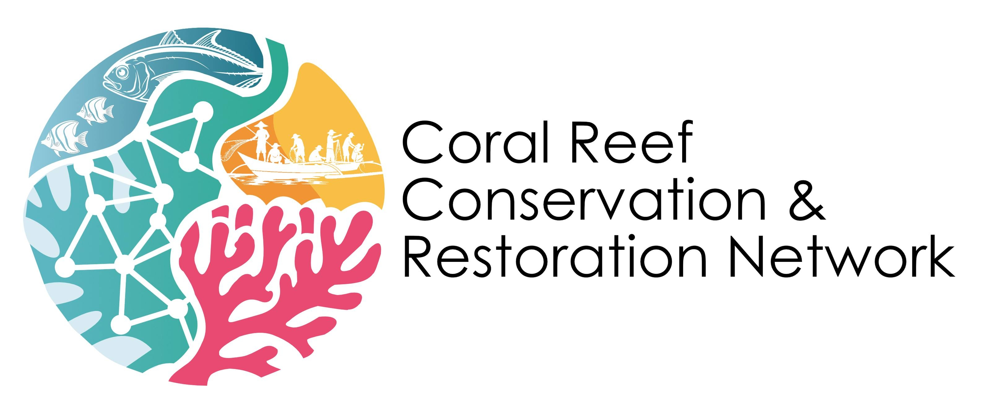

Active Projects
Our network is engaged in multiple long-term monitoring and restoration initiatives across reef sites. Each project is designed to generate data for evidence-based conservation decisions.
Long-term Reef Monitoring
Focus: Ecological Monitoring
Systematic surveys of coral and fish communities at established monitoring sites. Annual assessments track reef health indicators including coral cover, species diversity, and biomass dynamics.
Coral Restoration Trials
Focus: Reef Restoration
Experimental restoration plots testing propagation and transplantation techniques. We evaluate survival rates, growth patterns, and ecological integration of restored coral colonies.
Fish Sanctuary Network
Focus: Community-Based Management
Support for locally-managed marine protected areas. We provide technical assistance for monitoring fish populations and assessing effectiveness of sanctuary management.
Reef Resilience Assessment
Focus: Climate Adaptation
Evaluation of reef resilience to thermal stress and other disturbances. We identify management strategies that enhance ecosystem resilience and adaptive capacity.
Capacity Building Program
Focus: Local Engagement
Training and mentorship for local scientists and fishers. We build regional expertise in reef monitoring methods, data analysis, and conservation decision-making.
Open Data Platform
Focus: Knowledge Sharing
Development of accessible data systems for reef monitoring information. We ensure research findings are available to managers, policymakers, and the scientific community.
Key Outcomes
- 2026: Ongoing: Expanded network operations, annual monitoring cycles, seasonal restoration activities, continuous capacity building
- 2025: Attended and participated in key reef conservation workshops and regional meetings
- 2025: Organized small gathering with PO (People's Organization) members of Maria, Siquijor for community engagement and consultation
- 2025: Conducted habitat assessments in Siquijor
- 2025: Presented the project to the Sangguniang Bayan (SB) in Siquijor for procurement of Prior Informed Consent to proceed with the project
- July 2025: Birth of the Coral Reef Conservation and Restoration Network
Collaborate With Us
Interested in participating in our research or supporting reef conservation? We welcome partnerships with researchers, organizations, and communities.
Get in Touch